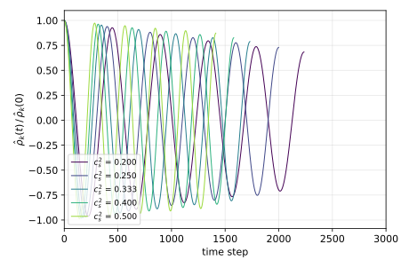
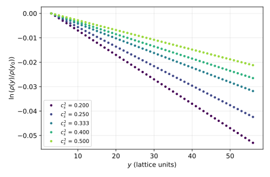
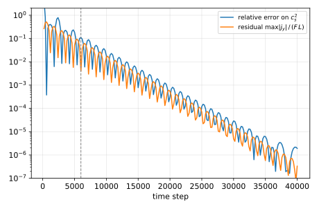
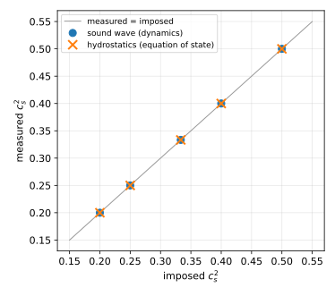
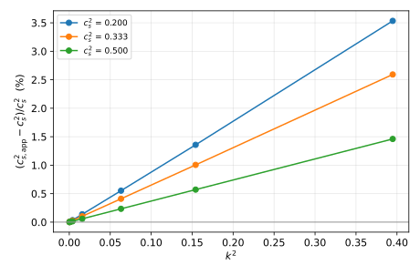

Supplement
Numerical Measurement of the Speed of Sound
This supplement was added to the web edition of the thesis in October 2026. It is not part of the thesis defended in 1997. The numerical experiments it reports were designed, run and written up with the help of an AI assistant (Claude, Anthropic). They can be reproduced with the script mesure_cs2.py, which runs in about thirty seconds.
S.1 Motivation
At the end of chapter 3 of the first part, we noted that with the model built there, the square of the speed of sound, \(c_s^2\), “is no longer fixed to \(1/3\) or \(1/2\) but has become a free parameter of the model”. This statement follows from the Chapman-Enskog expansion: choosing the equilibrium value of the energy mode as \(e^{(0)}=c_s^2\,\rho+j^2/2\rho\) gives the macroscopic equations (3.33) with the equation of state \[\begin{equation} \label{eos-supp} P=c_s^2\,\rho . \end{equation}\] An expansion only tells us what the model should do, though. The aim of this supplement is to check numerically that the model actually does it, by measuring \(c_s^2\) in simulations where it was imposed at different values.
The quantity \(c_s^2\) enters the macroscopic behavior of the fluid in two distinct ways, which give two independent measurements:
thermodynamically, through the equation of state (S.1), which fixes how the density responds to a pressure gradient;
dynamically, as the square of the speed at which density perturbations propagate.
The first measurement uses a fluid at rest and the second a fluid in motion, so their agreement with the imposed value is a real test of the model, and not a re-reading of the input parameter.
S.2 The model as simulated
The simulated model is exactly the nine-velocity model D2C1.2 (D2Q9) of chapter 3, figure 3.1:
the collision matrix is diagonal in the orthogonal basis of moments (3.6), \(\Omega={\mathcal{T}}^{-1}\,\widehat\Omega\,{\mathcal{T}}\), with eigenvalues \((0,\lambda_e,0,0,\lambda_\chi,\lambda_\chi,\lambda_\nu,\lambda_\nu,\lambda_\sigma)\);
the equilibrium populations are those given at the end of chapter 3: \[\begin{equation} N_0^{\mathrm{eq}}={3-5\,c_s^2\over 3}\left(\rho-{2\,j^2\over(3-5\,c_s^2)\,\rho}\right),\qquad N_i^{\mathrm{eq}}=t_p\left(\rho+{j_\alpha c_{i\alpha}\over c_s^2} +{j_\alpha j_\beta\over 2\rho\,c_s^2}\left(3\,c_{i\alpha}c_{i\beta}-\delta_{\alpha\beta}\right)\right), \end{equation}\] with \(t_1=c_s^2/3\) and \(t_2=c_s^2/12\).
We used \(\lambda_\nu=\lambda_\chi=\lambda_\sigma=1.2\) and \(\lambda_e=1\), that is a kinematic viscosity \(\nu=(1/\lambda_\nu-1/2)/3\approx0.111\) and a bulk viscosity \(\xi=(2/3-c_s^2)(1/\lambda_e-1/2)\). When a body force \(\rho\,F\) is applied, it is introduced as in chapter 4, by adding \(t_p\,\rho\,{\vec F}.\vec{c}_i/c_s^2\) to the populations at each time step, with the corrected definition of momentum \({\mathbf{j}}=\sum_i N_i\,\vec{c}_i+\rho\,{\vec F}/2\). Solid walls use the bounce-back.
The parameter \(c_s^2\) is free, but not without limits. The rest population must stay positive, \(N_0^{\mathrm{eq}}\geq0\), which requires \(c_s^2<3/5\), and the bulk viscosity must stay positive, which requires \(c_s^2<2/3\). We therefore tested five values covering most of the admissible range: \(c_s^2=0.2\), \(0.25\), \(1/3\), \(0.4\) and \(0.5\).
S.3 First experiment: a standing sound wave
S.3.1 Theory
Linearizing equations (3.33) around a fluid at rest of density \(\rho_0\), for a perturbation depending only on \(x\), gives \[\begin{equation} \partial_t\rho+\partial_xj_x=0,\qquad \partial_tj_x=-c_s^2\,\partial_x\rho+(\nu+\xi)\,\partial_{x^2}j_x. \end{equation}\] The Fourier component \(\hat\rho_k(t)\) of the density then obeys a damped oscillator equation, \[\begin{equation} \ddot{\hat\rho}_k+(\nu+\xi)\,k^2\,\dot{\hat\rho}_k+c_s^2k^2\,\hat\rho_k=0, \end{equation}\] whose solution is \[\begin{equation} \label{damped-wave} \hat\rho_k(t)=A\,e^{-\Gamma t}\cos(\omega t+\varphi),\qquad \Gamma={(\nu+\xi)\,k^2\over2},\qquad \omega^2=c_s^2k^2-\Gamma^2 . \end{equation}\] Measuring the frequency \(\omega\) and the damping rate \(\Gamma\) of a standing wave therefore gives \(c_s^2=(\omega^2+\Gamma^2)/k^2\), whatever the values of the viscosities.
S.3.2 Set-up
The domain is periodic, \(200\) nodes long, and the wave number is \(k=2\pi/200\approx0.031\). The fluid starts at rest, with populations at equilibrium and density \(\rho=1+10^{-3}\cos(kx)\); the small amplitude keeps the flow in the linear regime. We record \(\hat\rho_k(t)\) over about five acoustic periods, then fit the four parameters \(A\), \(\Gamma\), \(\omega\) and \(\varphi\) of (S.5).

S.3.3 Results
The signals of figure S.1 are damped cosines, as predicted. The values of \(c_s^2\) deduced from the fits are given in table form in section S.5: they coincide with the imposed values to better than \(10^{-4}\) in relative terms. The tiny remaining deviation, always positive, is explained by the lattice dispersion studied in section S.6.
S.4 Second experiment: hydrostatic equilibrium
S.4.1 Theory
We now return to the closed-box experiment of chapter 4 (figure 4.1): a fluid between two walls, subject to a uniform body force \(F\) directed along \(-y\). In the steady state the fluid is at rest, \({\mathbf{j}}=0\), and the momentum equation reduces to the balance between the pressure gradient and the force, \(\partial_yP=-\rho\,F\). With the equation of state (S.1), this gives \[\begin{equation} \label{hydro-profile} c_s^2\,\partial_y\rho=-\rho\,F \qquad\Longrightarrow\qquad \ln{\rho(y)\over\rho(y_0)}=-{F\over c_s^2}\,(y-y_0). \end{equation}\] The logarithm of the density is linear in \(y\), and its slope gives \(c_s^2\) directly. Unlike the first experiment, this measurement involves neither the viscosities nor the dynamics: it tests the equation of state alone.
S.4.2 Set-up
The channel is \(60\) nodes high between two bounce-back walls (and periodic, one node wide, along \(x\)), with \(F=2\times10^{-4}\). The fluid starts at rest with a uniform density \(\rho=1\). Once the steady state is reached, we fit a straight line through \(\ln\rho(y)\), leaving out the three nodes nearest each wall.

S.4.3 A trap: slow convergence
When the force is switched on, the fluid is not at rest: it sets off a sound wave that bounces between the walls, and the only thing that damps it is the viscosity. According to (S.5), its amplitude decays as \(e^{-\Gamma t}\) with \(k\approx\pi/L\) for the fundamental mode of a channel of height \(L\). For \(c_s^2=0.4\) and \(L\approx58\), this gives \(\Gamma\approx3.6\times10^{-4}\) per time step, close to the rate of about \(4\times10^{-4}\) observed in figure S.3. Reaching the hydrostatic state to within \(10^{-6}\) therefore takes some \(35\,000\) time steps.
A first run stopped after \(6\,000\) time steps (dashed line in figure S.3) gave errors of up to \(11\%\) on \(c_s^2\), of either sign depending on the phase of the residual oscillation. The results below were obtained after \(40\,000\) time steps; the program also checks that the residual velocity has fallen below \(10^{-3}\) of its initial scale before measuring.

S.4.4 Results
The profiles of figure S.2 are straight lines, as predicted by (S.6), and their slopes give \(c_s^2\) to within \(2\times10^{-6}\) in relative terms. The equation of state \(P=c_s^2\rho\) is therefore satisfied to the accuracy of the simulation, for every imposed value.
S.5 Summary of the measurements
The table below gathers the two measurements. Figure S.4 shows them against the imposed value.
| imposed \(c_s^2\) | sound wave | deviation | hydrostatics | deviation |
|---|---|---|---|---|
| \(0.2\) | \(0.200017\) | \(+0.009\%\) | \(0.2000000\) | \(-0.0001\%\) |
| \(0.25\) | \(0.250019\) | \(+0.008\%\) | \(0.2500000\) | \(-0.0001\%\) |
| \(1/3\) | \(0.333355\) | \(+0.006\%\) | \(0.3333330\) | \(-0.0001\%\) |
| \(0.4\) | \(0.400021\) | \(+0.005\%\) | \(0.3999992\) | \(-0.0002\%\) |
| \(0.5\) | \(0.500018\) | \(+0.004\%\) | \(0.4999997\) | \(-0.0001\%\) |

S.6 Lattice dispersion
The Chapman-Enskog expansion is valid for wavelengths that are large compared with the lattice spacing. To see where this approximation stops holding, we repeated the sound-wave measurement on shorter and shorter domains, from \(400\) down to \(10\) nodes, that is for wave numbers \(k\) from \(0.016\) to \(0.63\) (dispersion effects of this kind in lattice gases are discussed in [24]). We call apparent speed of sound the value \(c_s^2{}_{\mathrm{app}}=(\omega^2+\Gamma^2)/k^2\) obtained in this way.

Figure S.5 shows that the relative deviation grows as \(k^2\): \[\begin{equation} {c_s^2{}_{\mathrm{app}}-c_s^2\over c_s^2}\simeq a\,k^2, \end{equation}\] with \(a\approx0.087\) for \(c_s^2=0.2\), \(a\approx0.066\) for \(c_s^2=1/3\) and \(a\approx0.037\) for \(c_s^2=0.5\). This is the expected behavior of a scheme whose truncation errors are of second order. It also accounts for the deviations of the first experiment: with \(k\approx0.031\), \(a\,k^2\) is of the order of \(10^{-4}\). In practice, a wave resolved by about twenty nodes per wavelength (\(k\approx0.3\)) already propagates at the right speed to within \(1\%\).
S.7 Conclusion
Two independent measurements, one dynamic and one thermodynamic, confirm the statement of chapter 3: in this model, \(c_s^2\) is a genuine free parameter. The density of a fluid at rest obeys the equation of state \(P=c_s^2\rho\) with the imposed value, and density perturbations propagate at the speed \(c_s\), for every value tested between \(0.2\) and \(0.5\). The only limits are those of the model itself (\(c_s^2<3/5\)) and the lattice dispersion, which is negligible as soon as wavelengths are resolved by a few tens of nodes.
This freedom has a practical use: for a given flow velocity, increasing \(c_s^2\) lowers the Mach number, and hence the compressibility errors of a model meant to simulate an incompressible fluid. The second experiment also shows that, in a confined domain, these waves are damped only by the viscosities: reaching a steady state can take far longer than the hydrodynamic time scales suggest.
References cited in this chapter
- [24] P. Grosfils and P. Lallemand, “Dispersion effects in lattice gases with internal and translational mode coupling”, Europhys. Lett., Vol. 24, 1993, pp. 473–478. ↗